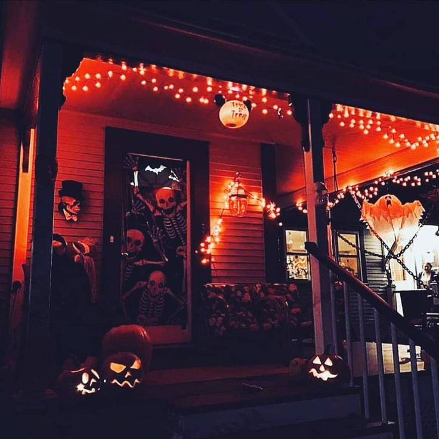
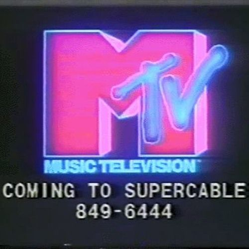
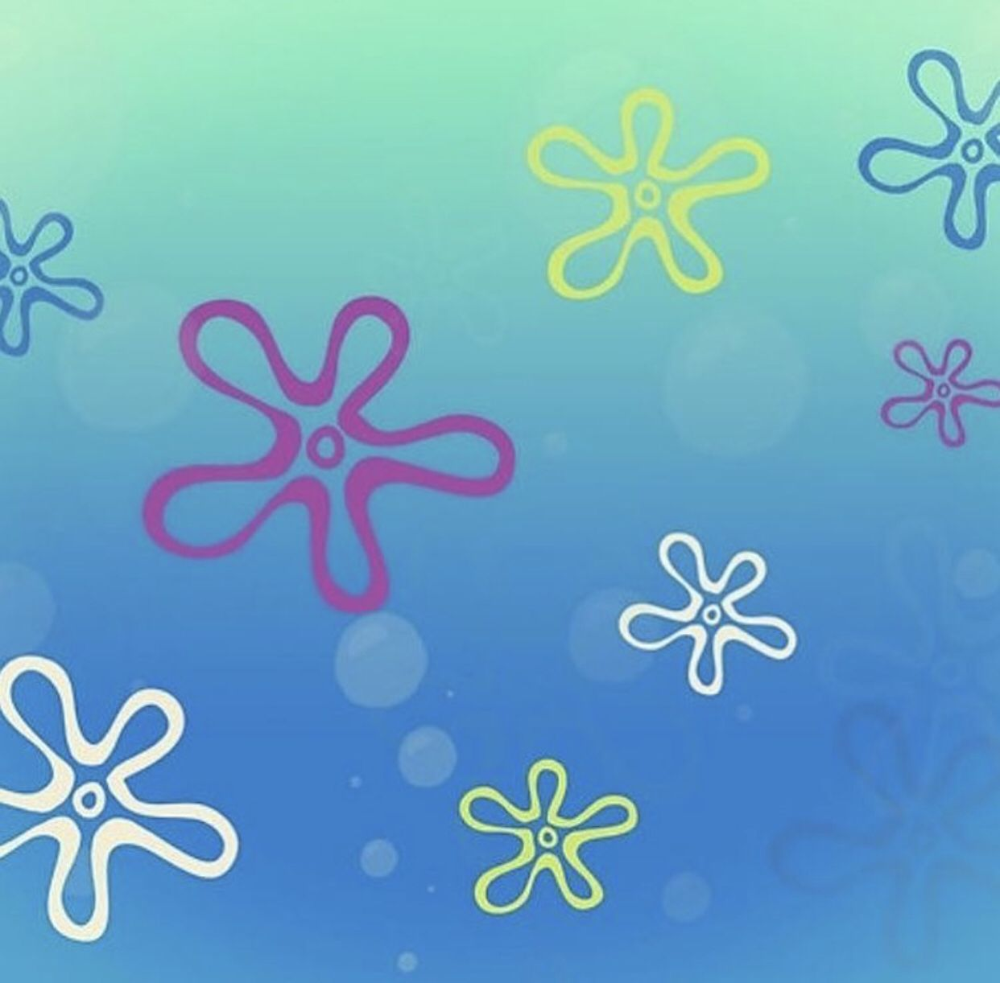

Looking back, Halloween was one of my favorite hoidays growing up. I would always enjoy being out in the neighborhood all day long. I would feel so alive and free wandering to all of these different places, both familiar and not so much. I would be surprised by how far I could walk on those Halloween nights! But there was plenty of motivation to do so! The fun, spooky vibes of the Halloween decorations, along with the variety of those decorations provided some exciting scenery! I'm especially fond of decorations light up! Getting candy all day was also very motivational! I've always loved free food! But there was more to love about Halloween than just trick or treating! Halloween specials on TV made thr holiday enjoyable at home too! Besides all of that, Halloween happens during my birth month of October! There's so much to love about this holiday!
If I'm being perfectly honest, pretty much all of the music I listen to could be considered nostalgic. That is probably mostly because I don't really care to keep up with all of the popular new trends, and that includes new trends in music.But it could also be because I have always found comfort in the nostalgic environments that such music creates. I listen to a wide variety of music. So, I often have a hard time completely defining my music taste. But when I think about it enough, the music I listen to is either of a past that is decades behind, or inspired by it.
Coming out in 1999, this iconic cartoon by Stephen Hillenberg has a special place in the memories of many people around the world. The nautical nonsense from its golden age in the first three seasons alone contains hundreds of iconic moments that have been remembered and brought up to lighten up conversations both online and not. Even creations based on the show like memes and merchandise can bring one back to happier days.
